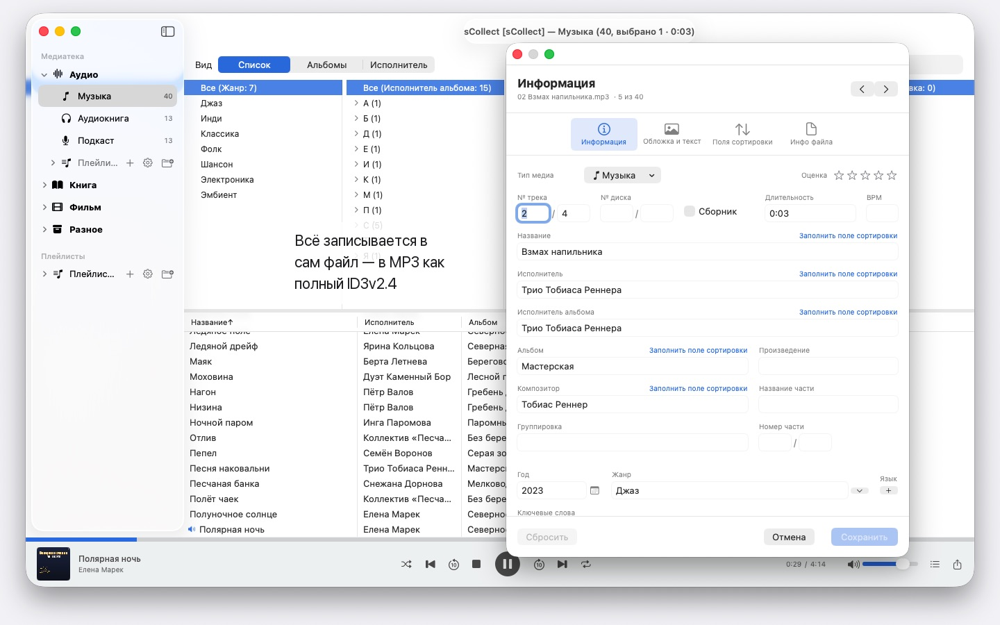
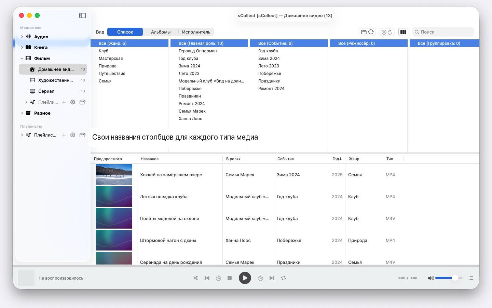

Тысячи исполнителей, несколько Mac, любая macOS с 14-й: sCollect упорядочивает музыку, фильмы и книги и записывает ваши данные в сами файлы. Без учётной записи и облака.


sCollect — это медиатека для всего, что можно собирать: музыка, фильмы, домашнее видео, аудиокниги, подкасты и электронные книги. И для вещей, которые вовсе не являются медиафайлами: монет или марок, снятых на фото и описанных. Как называются категории, решаете вы сами.
Отличие от обычного каталога в том, что sCollect пишет обратно. То, что вы вводите в редакторе, попадает не только в базу данных, но и в метаданные самого файла. Ваша работа останется с вами и тогда, когда однажды вы перестанете пользоваться sCollect.
ПОРЯДОК, КОТОРЫЙ НЕ НУЖНО НАВОДИТЬ САМОМУ
При импорте sCollect кладёт каждый файл на своё место — по типу медиа, исполнителю, альбому или дате, смотря как вы настроили. У каждого типа медиа может быть своя папка, в том числе на другом диске: фильмы на большом внешнем, музыка на быстром внутреннем.
Кто предпочитает оставить собрание там, где оно лежит, тот вместо этого связывает его. Связанные файлы не трогаются никогда.
ДЛЯ ФОТО И ВИДЕОСЪЁМКИ
Кто фотографирует или снимает видео, настраивает для типа медиа хранение по дате: при импорте файлы попадают в папки по годам и месяцам, а имя файла несёт время съёмки, прочитанное из самого файла, — у видео с пометкой, если камера не указала часовой пояс. Префиксы камеры вроде IMG_ по вашему желанию исчезают из названия, добавляется дата ISO, и список сортируется так же, как файлы на диске.
МЕТАДАННЫЕ, КОТОРЫЕ ДОХОДЯТ ДО ФАЙЛА
Один редактор для отдельных элементов, второй — для многих сразу. Оба пишут в том формате, который несёт сам файл: ID3v2.4 у MP3, структура тегов MP4 и M4A, комментарии Vorbis у FLAC и OGG, текстовые блоки AIFF и WAV, DSF у записей DSD, EXIF, IPTC и XMP у изображений.
Там, где в формате нет поля для чего-то или файл защищён от копирования, sCollect кладёт рядом sidecar-файл, вместо того чтобы потерять сведения. Если файл расходится с медиатекой, редактор скажет об этом раньше, чем вы что-то перезапишете.
ЧТО СОКРАЩАЕТ РАБОТУ
- Найти/Заменить по всем полям
- Поиск дубликатов по всей категории, с понятным обоснованием, какая версия лучше
- Обозреватель столбцов, как в музыкальном менеджере, с множественным выбором в каждом столбце. Тысячи исполнителей без бесконечной прокрутки: группировка по первым буквам, A, AB, ABB – три щелчка до цели
- Воспроизведение звука и видео, с плейлистами и запомненной позицией
НАЙТИ ОТСУТСТВУЮЩИЕ ФАЙЛЫ, А НЕ ИСКАТЬ ИХ
Один проход отмечает каждую запись, файла которой больше нет, и запоминает результат. Отдельный режим показывает только эти записи и вычёркивает то, что вы связали заново.
НЕСКОЛЬКО КОМПЬЮТЕРОВ, ОДНО СОБРАНИЕ
Медиатека может зарегистрировать копии. Изменения в основном собрании позже расходятся по всем доступным копиям, включая файлы и теги. Если копия сейчас офлайн, изменение остаётся в очереди и догоняет её, как только она снова появится.
Какая macOS стоит на каждом Mac, неважно: Mac с macOS 14 и Mac с macOS 26 читают одно и то же собрание, и ни одно обновление системы его не преобразует. Однако копии — это не резервная копия.
ИМПОРТ И ЭКСПОРТ
Существующие собрания приходят через iTunes-XML, вместе с оценками и плейлистами. Наружу — как sCollect-XML, без потерь, для переезда и хранения, как плейлист для Apple Music или как iTunes-XML.
НА ВАШЕМ MAC, И ТОЛЬКО ТАМ
Ни учётных записей, ни облака, ни аналитики, ни рекламы. sCollect работает только с теми папками, которые вы ему дали.
Поэтому sCollect не импортирует CD и не загружает сведения о треках из интернета — Apple Music уже умеет и то и другое. Импортируйте CD там в формате AAC, Apple Lossless или MP3, и файлы сами принесут свои сведения в sCollect. Так ни один сервис не узнает, что вы собираете и как всё упорядочиваете.
На 24 языках на выбор, каждый — с полной справкой.
- Требуется macOS 14 или новее
- 24 языка
- Поддержка: SwiftAppsBavaria@gmx.net
Другие приложения
sVectorLift
Открытие, просмотр и сохранение старого векторного клипарта в формате SVG — CorelDRAW, Windows Metafile и CGM.
SwiftRename
С карты памяти в архив: переименование фото и видео по времени съёмки, раскладка по папкам годов и месяцев, поиск дубликатов — в том числе RAW.
sName2Date
Запись даты из имени файла как даты съёмки в фотографии, фильмы и аудиозаписи — чтобы файл вроде IMG_20240115_103000.jpg правильно сортировался в любой программе для управления фотографиями. Данные изображения и видео остаются нетронутыми; PDF и другие файлы без даты съёмки получают дату файла, а по желанию и имя приводится к формату ISO. Целые деревья папок за один раз, и любой проход можно отменить сочетанием ⌘Z.
sName2Date Lite
Версия для одного файла за проход: запись даты из имени файла как даты съёмки в фотографию, фильм или аудиозапись, ручная установка даты, приведение имени к формату ISO и отмена всего сочетанием ⌘Z — те же возможности, что и у sName2Date, только без целых папок.
sCollectPlay
Проигрыватель для медиатеки: воспроизведение музыки, фильмов, аудиокниг и подкастов просто из папки, файла iTunes XML или медиатеки sCollect — теги файлов при этом не меняются. Со списками воспроизведения, звуковыми дорожками и дорожками субтитров, а для фильмов — с замедленным воспроизведением и покадровым переходом. То, что macOS не воспроизводит сама, например MKV, AVI или DSD, передаётся внешнему плееру.
sCollectPlay Lite
Облегчённая версия sCollectPlay: просто откройте папку, файл iTunes XML или медиатеку sCollect и воспроизводите из них музыку, фильмы, аудиокниги и подкасты — со списками воспроизведения, звуковыми дорожками и дорожками субтитров, замедленным воспроизведением и покадровым переходом. Один источник за сеанс; браузер по столбцам, собственные списки воспроизведения и недавно использованные источники доступны только в полной версии.
sBikeBridge
Анализ велопоездок без загрузки на какой-либо портал: чтение файлов FIT с любого велокомпьютера, который записывает в этом формате, а также GPX и TCX. Поездки хранятся в собственной библиотеке на Mac — с картой, мощностью и пульсом, фотографиями и заметками; дубликаты распознаются при импорте. Показатели по годам или месяцам и фильтры по дистанции, набору высоты и продолжительности позволяют сравнивать поездки. По желанию карта доступна и офлайн.